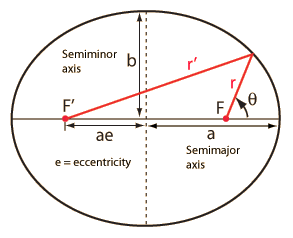
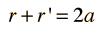
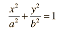
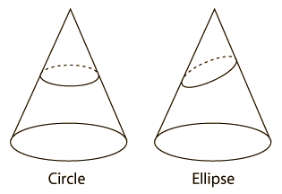
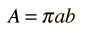

Ellipses and Elliptic Orbits
|  | An ellipse is defined as the set of points that satisfies the equation In cartesian coordinates with the x-axis horizontal, the ellipse equation is |
|  | The ellipse may be seen to be a conic section, a curve obtained by slicing a circular cone. A slice perpendicular to the axis gives the special case of a circle. |
For the description of an elliptic orbit, it is convenient to express the orbital position in polar coordinates, using the angle θ:
This form makes it convenient to determine the aphelion and perihelion of an elliptic orbit. The area of an ellipse is given by

Each of the conic sections can be described in terms of a semimajor axis a and an eccentricity e. Representative values for these parameters are shown along with the types of orbits which are associated with them. |  |
|
Index |